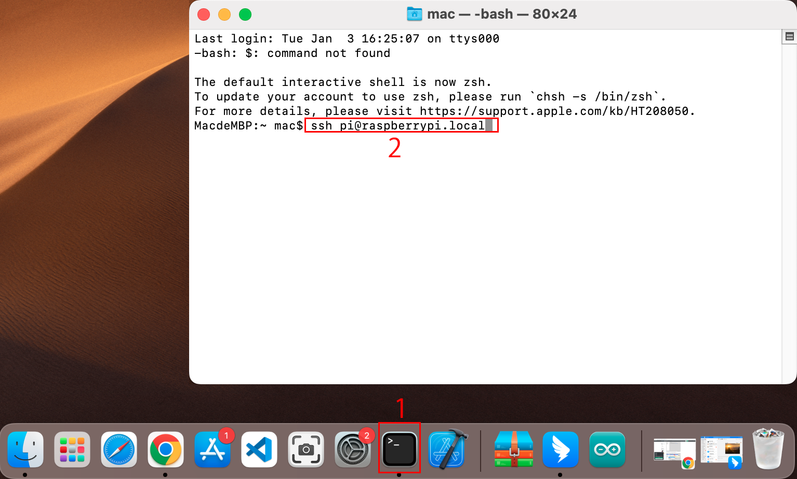

Note
Bonjour et bienvenue dans la Communauté Facebook des passionnés de Raspberry Pi, Arduino et ESP32 de SunFounder ! Plongez plus profondément dans l’univers des Raspberry Pi, Arduino et ESP32 avec d’autres passionnés.
Pourquoi rejoindre ?
Support d’experts : Résolvez les problèmes après-vente et les défis techniques avec l’aide de notre communauté et de notre équipe.
Apprendre et partager : Échangez des astuces et des tutoriels pour améliorer vos compétences.
Aperçus exclusifs : Accédez en avant-première aux annonces de nouveaux produits et aux aperçus.
Réductions spéciales : Profitez de réductions exclusives sur nos produits les plus récents.
Promotions festives et cadeaux : Participez à des cadeaux et des promotions de vacances.
👉 Prêt à explorer et à créer avec nous ? Cliquez [Ici] et rejoignez-nous aujourd’hui !
Pour les utilisateurs de Mac OS X
Pour les utilisateurs de Mac OS X, SSH (Secure Shell) offre une méthode sécurisée et pratique pour accéder à distance et contrôler un Raspberry Pi. Cela est particulièrement utile pour travailler avec le Raspberry Pi à distance ou lorsqu’il n’est pas connecté à un moniteur. En utilisant l’application Terminal sur un Mac, vous pouvez établir cette connexion sécurisée. Le processus implique une commande SSH intégrant le nom d’utilisateur et le nom d’hôte du Raspberry Pi. Lors de la première connexion, une invite de sécurité vous demandera de confirmer l’authenticité du Raspberry Pi.
Pour vous connecter au Raspberry Pi, tapez la commande SSH suivante :
ssh pi@raspberrypi.local
Un message de sécurité apparaîtra lors de votre première connexion. Répondez par yes pour continuer.
The authenticity of host 'raspberrypi.local (2400:2410:2101:5800:635b:f0b6:2662:8cba)' can't be established. ED25519 key fingerprint is SHA256:oo7x3ZSgAo032wD1tE8eW0fFM/kmewIvRwkBys6XRwg. Are you sure you want to continue connecting (yes/no/[fingerprint])?
Saisissez le mot de passe du Raspberry Pi. Sachez que le mot de passe ne s’affichera pas à l’écran pendant que vous le tapez, ce qui est une fonction de sécurité standard.
pi@raspberrypi.local's password: Linux raspberrypi 5.15.61-v8+ #1579 SMP PREEMPT Fri Aug 26 11:16:44 BST 2022 aarch64 The programs included with the Debian GNU/Linux system are free software; the exact distribution terms for each program are described in the individual files in /usr/share/doc/*/copyright. Debian GNU/Linux comes with ABSOLUTELY NO WARRANTY, to the extent permitted by applicable law. Last login: Thu Sep 22 12:18:22 2022 pi@raspberrypi:~ $